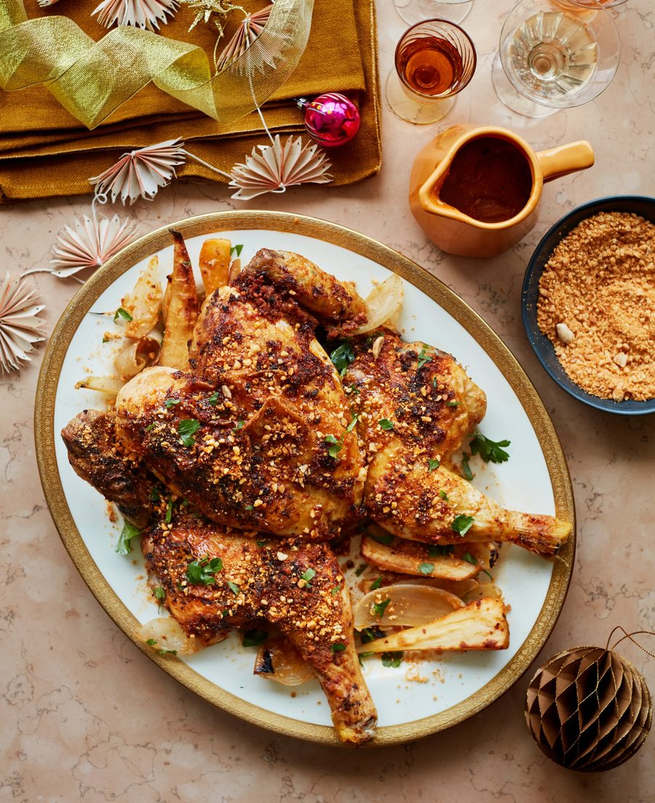

Yaji-spiced spatchcocked chicken with parsnips

The inspiration for this comes from West African yaji spice mix, which is traditionally used to make suya skewers, a popular street food. I’ve swapped the usual peanut cake accompaniment for roast peanuts and the selim pepper for dried green peppercorns, which are more easily available. If you’ve not done it before, don’t be daunted by spatchcocking the chicken (there are numerous instructional videos online: watch one and go for it, or ask a butcher to do it for you). If you want to get ahead, marinate the chicken and make the peanut crumble the day before. And by all means swap the chicken for a festive turkey; it will take much longer to cook, though, so cover it with plenty of foil so the marinade doesn’t burn.
For the marinade
For the peanut crumble
Heat the oven to 220C (200C fan)/425F/gas 7.
First make the marinade. Put the first seven ingredients in a food processor and pulse until the nuts have broken down to the size of couscous grains. Add the butter, lemon zest and juice, and a teaspoon of salt, and pulse until well mixed.
Put the spatchcocked chicken breast side up on a board, rub the spiced butter mix under the skin (be gentle, so it doesn’t rip), then spread the rest all over the outside of the bird.
Put the reserved backbone, onions, garlic, parsnips, stock and a teaspoon of salt in a large, high-sided oven tray and set a rack on top of them. Lay the chicken skin side up on the rack, then roast for 55 minutes, until golden and dark in places. Remove from the oven and set aside to rest for 10 minutes.
Meanwhile, put all the peanut crumble ingredients in the large bowl of a food processor with a quarter-teaspoon of salt, pulse until the nuts are the size of couscous grains, then tip into a bowl.
Lift the chicken off its rack and on to a platter, discard the backbone, then transfer the roast parsnips and half the onions to a plate. Carefully pour the tray juices, the remaining onions and the garlic into a large jug, then return the parsnip-and-onion mix to the tray. Turn on the grill to its highest setting, then grill the parsnip mix, turning it occasionally, for seven to 10 minutes, until golden and slightly charred in places; keep a beady eye on it, so it doesn’t catch and burn.
Meanwhile, put a small saucepan on a medium-high heat and spoon in three tablespoons of the fat that will by now have risen to the top of the jug of cooking juices. Stir in the flour, and cook for two or three minutes, until it starts smelling slightly nutty. Stirring all the while, pour in the cooking juices from the jug and any that have pooled under the resting chicken. Cook for 10 minutes, until the gravy thickens slightly and the fat rises to the top, then pour into a serving jug.
Arrange the onions and parsnips around the chicken, sprinkle over a tablespoon and a half of the peanut crumble mixture and the parsley, and serve with the gravy and the remaining crumble mix on the side.